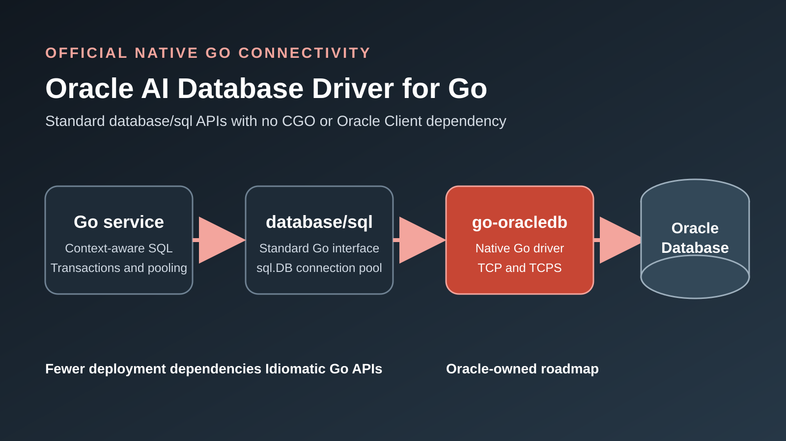

Oracle Database and Go
Oracle Database Driver for Go: Official Native Go Connectivity
Build Oracle Database applications with Go's standard database/sql API, without CGO or an Oracle Client installation.
Oracle Database Driver for Go, published as go-oracledb, gives Go developers an official native-Go path to Oracle Database. It implements Go's standard database/sql driver interface, supports Oracle Database 19c and later, and connects over TCP or TCPS without requiring CGO or Oracle Client libraries.
The immediate benefit is operational simplicity: fewer build dependencies, more reproducible containers, and an easier route to cross-platform Go deployments. The longer-term benefit is an Oracle-owned Go driver and public API direction for microservices, automation, AI services, and cloud-native back ends.

Key Takeaways
go-oracledbis Oracle's native Go driver for the standarddatabase/sqlpackage.- It removes the runtime requirement for CGO and Oracle Client libraries.
- The current
v26.0.0-betarelease is useful for evaluation, but teams should validate required features before production adoption. - Open work on vectors, OSON, REF CURSORs, Oracle object types, sessionless transactions, and token authentication shows the direction, not guaranteed delivery.
What Is Oracle Database Driver for Go?
Oracle Database Driver for Go is a native implementation of Go's database/sql/driver interface. The module is github.com/oracle/go-oracledb/v26, and the registered driver name is oracledb. Applications can continue using familiar sql.DB, context-aware queries, prepared statements, transactions, and connection pooling.
Oracle-specific public APIs are exposed through github.com/oracle/go-oracledb/v26/oracle. Packages below the internal driver tree are implementation details and should not become application dependencies.
Release status: pkg.go.dev currently lists v26.0.0-beta. Treat the driver as a fast-moving beta and confirm the latest release before adopting it.
Connect to Oracle Database from Go
Install the module through the standard Go module workflow:
go get github.com/oracle/go-oracledb/v26@latest
Keep credentials outside source control. This example reads a complete driver DSN from ORACLE_DATABASE_DSN, opens the standard Go connection pool, verifies connectivity, and queries DUAL.
package main
import (
"context"
"database/sql"
"fmt"
"log"
"os"
"time"
_ "github.com/oracle/go-oracledb/v26"
)
func main() {
dsn := os.Getenv("ORACLE_DATABASE_DSN")
if dsn == "" {
log.Fatal("ORACLE_DATABASE_DSN is required")
}
db, err := sql.Open("oracledb", dsn)
if err != nil {
log.Fatal(err)
}
defer db.Close()
ctx, cancel := context.WithTimeout(context.Background(), 10*time.Second)
defer cancel()
if err := db.PingContext(ctx); err != nil {
log.Fatal(err)
}
var value int
if err := db.QueryRowContext(ctx, "select 1 from dual").Scan(&value); err != nil {
log.Fatal(err)
}
fmt.Println(value)
}An Easy Connect DSN has this general shape:
export ORACLE_DATABASE_DSN='app_user/<password>@tcps://db.example.com:1521/my_service?transport_connect_timeout=10'Why Native Go Changes Deployment
Go teams often optimize for simple builds, reproducible containers, cross-compilation, and small deployment artifacts. A native-Go database driver follows that model because the application does not need a C toolchain during the build or Oracle Client libraries at runtime.
The driver also follows an operational pattern familiar from current Python and Node.js Oracle drivers: connect directly in the default thin-style path, with fewer external components between the application and database. For Go services, this can simplify developer laptops, CI/CD jobs, containers, and internal operational tools.
Compare the Oracle Database Drivers for Go
| Driver | Implementation | Strengths | Considerations |
|---|---|---|---|
go-oracledb |
Oracle-maintained native Go driver for database/sql |
Official Oracle direction; no CGO or Instant Client; standard Go APIs | Currently beta; feature coverage is still expanding |
godror |
CGO driver using ODPI-C and Oracle Client | Mature, established, and broad Oracle feature exposure | Requires CGO and Oracle Client libraries; deployment and cross-compilation are more involved |
go-ora |
Community-maintained pure-Go driver | No CGO; broad existing features including wallets, advanced types, bulk operations, and failover | Not Oracle's official driver |
Existing godror and go-ora applications do not need to migrate simply because a new driver exists. The useful distinction is that go-oracledb combines official Oracle ownership, native Go implementation, and database/sql compatibility. Choose according to the features and operational constraints of the application.
Current Driver Capabilities
The current public README documents the following foundation:
- Username and password authentication.
- Easy Connect and TNS connect descriptors.
- TCP and TCPS connections.
- SQL statements and transactions.
- Input, output, and PL/SQL input/output binds using
sql.Out. - In-band notifications.
- JSON returned as
string, BLOB as[]byte, and CLOB asstringor[]byte. - Configuration through DSN properties, environment variables, flags, or an Oracle connector.
- Oracle and driver error codes through
oracle.SQLError.
Preserve Oracle NUMBER precision
The driver returns scaled or unknown-scale Oracle NUMBER values as strings by default. Converting arbitrary decimal values directly to float64 can lose precision. Returning a string preserves the value and lets the application choose an integer, decimal, floating-point, or domain-specific representation.
Features to Watch
The public repository has active pull requests for advanced Oracle capabilities. These items are development signals, not release commitments. Confirm their status in the repository before planning production work.
| Area | Public work | Potential value |
|---|---|---|
| Oracle VECTOR | Draft PR #12 | Native dense vector binds and fetch mappings for AI and similarity-search applications. |
| OSON and JSON | PR #9 | Native OSON encoding and decoding, structured JSON access, and exact numeric handling. |
| REF CURSOR | PR #20 | Consume PL/SQL cursor results through public Go APIs. |
| ADT and VARRAY | PR #18 | Oracle named types and collection support. |
| Sessionless transactions | Draft PR #10 | Start, suspend, and resume transaction work independently of one session. |
| Token authentication | PR #27 and issue #21 | Additional token and IAM-oriented authentication options. |
When Should You Choose go-oracledb?
Put go-oracledb on the evaluation shortlist for a new Go service when official Oracle ownership, standard database/sql usage, and native-Go deployment simplicity matter. Straightforward SQL, transactions, common data types, and PL/SQL input/output calls are sensible evaluation targets.
Applications that depend on mature OCI behavior, advanced object types, queuing, specialized subscriptions, or extensively proven edge-case handling should compare their exact requirements with godror and go-ora. Beta status also means production teams should test failure behavior, performance, observability, and upgrade compatibility under their own workloads.
Plan a Safe Driver Evaluation or Migration
- Build a focused proof of concept. Connect, ping, query
DUAL, run representative SQL, commit and roll back a transaction, and call one PL/SQL procedure. - Inventory driver-specific behavior. Find driver imports, DSN builders, LOB handling, array binds, REF CURSOR wrappers, object types, wallet configuration, and authentication hooks.
- Test data mappings. Verify
NUMBER, timestamps and time zones, CLOB/BLOB, JSON, empty strings and NULL, ROWID, and PL/SQL BOOLEAN behavior. - Benchmark the real workload. Measure connection establishment, steady-state query latency, large result sets, memory use, cancellation, retries, and failover.
- Gate advanced features. Do not design against open pull requests until the required capability is merged, released, documented, and tested.
Conclusion
Oracle Database Driver for Go is an important step for the Go ecosystem. It provides an official native-Go route to Oracle Database, aligns with standard Go database APIs, and removes two common deployment dependencies: CGO and Oracle Client libraries.
Today, it is best approached as a promising beta for evaluation and new-service prototypes. Its architecture is already compelling: fewer moving parts, idiomatic Go APIs, and an Oracle-owned roadmap. As feature coverage and release maturity increase, it can become a natural foundation for Oracle-backed Go microservices and AI application infrastructure.
References
- Oracle Database Driver for Go repository and README
- go-oracledb module documentation
- Oracle-specific public Go API
- Go Wiki: SQL database drivers
- godror repository
- go-ora repository
- python-oracledb repository and node-oracledb repository
Frequently Asked Questions
Does go-oracledb require Oracle Instant Client?
No. It is implemented natively in Go and does not require Oracle Client libraries.
Does it work with Go's database/sql package?
Yes. The driver implements the standard database/sql/driver interface and registers the name oracledb.
Is go-oracledb production-ready?
The currently published module is v26.0.0-beta. Evaluate it against your production requirements and confirm the latest release status before adoption.
Should existing godror or go-ora applications migrate immediately?
No. Compare required features, operational constraints, maturity, and test results. The official driver is a new option, not an automatic migration requirement.